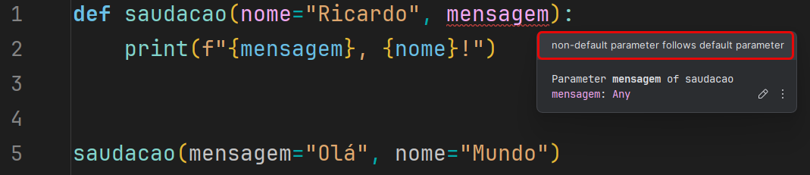

Os argumentos de uma função em Python são valores que você passa para a função quando a chama.
Esses valores são usados pela função para executar suas tarefas. Por exemplo, se você tem uma função que soma dois números, os argumentos seriam esses dois números.
Aqui está um exemplo:
def soma(a, b):
return a + b
resultado = soma(2, 3)
print(resultado) # Isso imprimirá 5
Neste caso, a e b são os argumentos da função soma.
Número de Argumentos
De forma predeterminada, se deve chamar uma função com o número correto de argumentos.
Isso significa que se uma função espera dois argumentos, você deve passar dois argumentos ao chamá-la.
Se você passar mais ou menos argumentos, o Python lançará um erro.
# Exemplo de função com número incorreto de argumentos
def subtracao(a, b):
return a - b
# Tentativa de chamar a função com apenas um argumento
try:
resultado = subtracao(10)
except TypeError as e:
print(f"Erro: {e}")
# Tentativa de chamar a função com três argumentos
try:
resultado = subtracao(10, 5, 2)
except TypeError as e:
print(f"Erro: {e}")
# Chamada correta da função com dois argumentos
resultado = subtracao(10, 5)
print(f"Resultado correto: {resultado}")
Número variável de argumentos
Às vezes, você pode querer que uma função aceite um número arbitrário de argumentos.
Para fazer isso, você pode usar o operador * antes do nome do argumento na definição da função.
def soma(*numeros):
total = 0
for numero in numeros:
total += numero
return total
resultado = soma(1, 2, 3, 4, 5)
print(resultado) # Isso imprimirá 15
Argumentos Nomeados
Em Python, você também pode chamar a função com argumentos nomeados.
Isso permite que você passe os argumentos em qualquer ordem, desde que você os nomeie.
Você pode definir um valor padrão para um argumento de função em Python.
Se você chamar a função sem passar um valor para esse argumento, o Python usará o valor padrão.
def saudacao(nome="Mundo"):
print(f"Olá, {nome}!")
saudacao() # Isso imprimirá "Olá, Mundo!"
saudacao("Python") # Isso imprimirá "Olá, Python!"

Retorno de múltiplos valores
Em Python, você pode retornar múltiplos valores de uma função.
Para fazer isso, você pode simplesmente retornar uma tupla de valores.
def quatro_operacoes(a, b):
return a + b, a - b, a * b, a / b
Argumentos que são outras funções
Em Python, funções podem ser passadas como argumentos para outras funções.
def operacoes(a, b, soma_func, subtracao_func, multiplicacao_func, divisao_func):
soma = soma_func(a, b)
subtracao = subtracao_func(a, b)
multiplicacao = multiplicacao_func(a, b)
divisao = divisao_func(a, b)
print(f"Soma: {soma}")
print(f"Subtração: {subtracao}")
print(f"Multiplicação: {multiplicacao}")
print(f"Divisão: {divisao}")
def soma(a, b):
return a + b
def subtracao(a, b):
return a - b
def multiplicacao(a, b):
return a * b
def divisao(a, b):
return a / b
# Exemplo de uso
operacoes(10, 5, soma, subtracao, multiplicacao, divisao)
Garantir iterabilidade de Python Scripts no Dynamo
Para garantir que nossos inputs sejam iteráveis, podemos usar a função ToList.